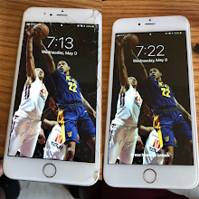

I have a strong proficiency in Javascript,HTML and CSS. I am currently in the process of building my own website to display my resume,portfolio of projects made during my time here and my iPhone repair business.
I started fixing computers and other handheld devices during high school. I didnt get into fixing iPhones until my Senior year. I would go to parties and I would see tons and tons of people with cracked screens. I saw the opportunity and ran with it.
I really have a strong passion for web development as well as Cybersecurity. I want to protect companies from being attacked as best as I can.
My favorite Comp project was building a Lexical Analyzer that displayed the number of tokens and lexemes given in a certain amount of code.
